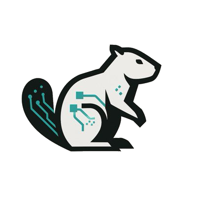

How do we work?
The machinery of us — attention, energy, habit, and why some days everything grows and some days nothing does.

busybeavera walk through things that matterOpening the notebook…
The machinery of us — attention, energy, habit, and why some days everything grows and some days nothing does.
What changes as the years pass, and what helps us keep living on our own terms.
Medicine’s ceiling feels higher than we assume. What if illness is a solvable engineering problem?
Open, W3C-compliant credential infrastructure for the public good.
DNS for trust — a decentralized directory for public registries.
Open protocol for decentralized value discovery & exchange.
An AI-powered ebook reader — ask books questions, press highlights into articles.
Beckn adapted for the energy sector — a digital energy grid.
Contributions to WHO SMART tooling.
Tended with others, too — core architect on WHO's DPI-H working group, student mentor with Avanti Fellows, operations with the National Service Scheme.